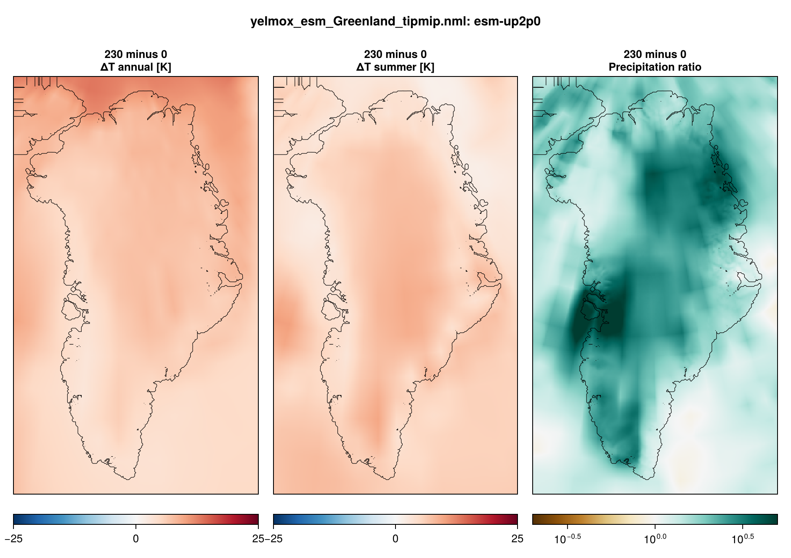

TIPMIP Greenland
Greenland simulations for TIPMIP, in three steps: a present-day optimization spin-up, as for ISMIP7; the ramp esm-up2p0 (232 yr), which starts from the spin-up’s restart bundle; and the stabilisations esm-up2p0-gwl2p0 and esm-up2p0-gwl4p0 (50 yr each), which start from the ramp’s restart bundles at the years where their forcing branches off. The forcing is the TIPMIP anomalies relative to the GCM’s piControl, added to the present-day reference climatology.
- Program:
yelmox(make yelmox) with the ESM climate backend ([comps] climate = "esm", see ESM forcing). - Config:
yelmox/yelmox_esm_Greenland.nml(the TIPMIP setup:-p). - Forcing data:
input/esm/esm_grl_tipmip.nml(ramp),input/esm/esm_grl_tipmip_gwl.nml(stabilisations) (see Database namelists). - Scripts:
scripts/tipmip/run_tipmip_greenland.sh, with the setupscripts/tipmip/params.sh(tipmip_grl).
Running
Run from the yelmox root, one step after the other: each step reads the restart bundles of the previous one.
scripts/tipmip/run_tipmip_greenland.sh spinupscripts/tipmip/run_tipmip_greenland.sh rampscripts/tipmip/run_tipmip_greenland.sh stabilisationsMODEL selects the GCM and grid; STAGE=1 creates the run folders and the SLURM script without submitting them.
MODEL |
[esm] esm_name |
[domain] grid_hub |
Steps | OUTROOT |
|---|---|---|---|---|
ipsl (default) |
IPSL-CM6-ESMCO2 |
GRL-8KM |
spin-up, ramp, both stabilisations | output/tipmip_grl_ipsl |
ecearth |
EC-Earth3-ESM-1 |
GRL-4KM |
spin-up, ramp | output/tipmip_grl_ecearth |
The runs are written to <OUTROOT>/spinup, <OUTROOT>/esm-up2p0 and <OUTROOT>/esm-up2p0-gwl2p0, <OUTROOT>/esm-up2p0-gwl4p0.
Spin-up
15 kyr (SPINUP_YEARS), with ctrl.run_step=spinup comps.dt_clim=10 sim.relax=True sim.opt=True esm.experiment=ctrl. It is the Greenland ISMIP7 spin-up (same [spinup], [relax] and [opt] groups) except for the surface mass balance, which chion computes from the reference climate ([comps] surface_method = "chion"). In the spin-up the backend applies the reference climatology only.
Ramp
- Timeline:
[transient]years 0 to 232 after the piControl branch (tstep_method = "cal",dtt = 1yr), restarted from<OUTROOT>/spinup/restart-15.000-kyr. - Switches:
ctrl.run_step=transient esm.experiment=esm-up2p0 esm.par_file=input/esm/esm_grl_tipmip.nml esm.use_esm=True esm.use_hist=False esm.use_proj=True. - Periods:
time_esm_ref = 0, 2,time_proj = 0, 231;time_hist = -1, -1lies beforetime_init, so every step reads the projection. - Restarts: for
ipsl, the script sets[tm_rst] method = "times"with the branch years of the stabilisations, 109 and 232 (the end).
Stabilisations
esm-up2p0-gwl2p0 starts from the ramp bundle restart-0.109-kyr, esm-up2p0-gwl4p0 from restart-0.232-kyr. Both run years 0 to 50 (transient.time_init=0 transient.time_end=50) with esm.par_file=input/esm/esm_grl_tipmip_gwl.nml. The stabilisation files start warm; their gcm_*_esm_ref groups therefore read the ramp file (esm-up2p0, years 0–2), so the anomalies stay relative to the piControl branch point, as in the ramp. The projection groups read the 50-yr files of the experiment (time = 1, 0, 49, 1, 12).
Forcing
TIPMIP provides monthly anomalies relative to piControl, on the run grid: ice_data/TIPMIP/{domain}/{grid_name}/{gcm}/{experiment}/{grid_name}_{gcm}_{experiment}_*yrs_<var>.nc. The gcm_*_esm_ref and gcm_*_proj groups point at the same files, so with time_esm_ref = 0, 2 (anomaly about 0, ratio about 1) the backend recovers the anomalies themselves.
| Reference atmosphere | MAR v3.14, monthly climatology 1961–1990 (time_ref), FesmData v2 SMB-MARv3.14-1961-1990 |
| Reference ocean | ORAS5, 1981–2010, read on GRL-16KM and remapped (bilin, gaps filled) |
| Air temperature | tas_anomaly [K] |
| Precipitation | pr_ratio [1] |
| Ocean | TF_anomaly [K], thermal-forcing anomaly, averaged to annual and taken at the shelf base |
| Salinity | none: the so groups read the ORAS5 reference, dso = 0 |
| Subglacial discharge | none ([gcm_sgd_*] filename = "none", Qd = 0) |
| Surface mass balance | chion |
| Shelf melt | bmb_method = "anom", tf_method = 2 (the melt follows dT_shlf, the ocean anomaly) |
| Topography, basins | ISMIP7 obs v1.3 (GrIMP surface) |

Output
The shared per-module files (yelmo.nc, yelmo_ts.nc, isos.nc, mshlf.nc, chion.nc, htopo.nc) and the restart bundles restart-<kyr>-kyr/. With the par-file timing, the ramp and the stabilisations write the 1D output every year and the 2D output ([tm_2D]) at the start and the end. [output] write_clim = True adds esm.nc and esm_ts.nc.